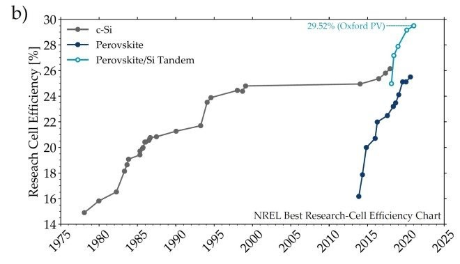

Perovskite solar cells are a rapidly emerging technology that has gained significant attention due to their potential for high efficiency and low production costs. These cells are made from a class of materials with a crystal structure similar to the mineral perovskite, which allows for efficient light absorption and charge transport. One of the most appealing aspects of perovskite solar cells is their ability to achieve efficiencies over 25%, surpassing many traditional silicon-based cells, while also being cheaper and easier to manufacture.

Efficiency trends for research solar cells from 1975 to 2025. The chart shows significant improvements in solar cell efficiency over time, with traditional crystalline silicon (c-Si) cells plateauing around 25%. Perovskite solar cells, emerging in the 2010s, have shown rapid gains, with the highest recorded efficiency for perovskite/Si tandem cells reaching 29.52% as of recent years. The tandem technology, which combines perovskite with silicon, has the potential to surpass single-material cells in efficiency, marking a promising advancement for future solar energy technologies. Data source: NREL Best Research-Cell Efficiency Chart.